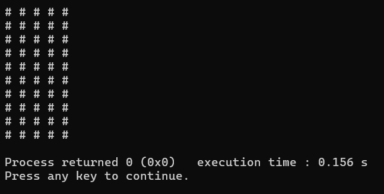

lección 8
bucles anidados
Puedes ejecutar un bucle dentro de otro bucle, lo que significa una serie de “repeticiones que se repiten”, observa el ejemplo:
#include <iostream>
using namespace std;
int main(){
int n = 10, m = 5;
for(int i = 0; i < n; i++){
for(int j = 0; j < m; j++){
cout << “# ”;
}
cout << ‘\n’;
}
}
Este es un algoritmo que utiliza un bucle anidado para escribir un rectángulo de caracteres #. El primer bucle va a separar n líneas con un carácter de enter, y el segundo escribe los símbolos # con un espacio la cantidad de veces m; lo que da la siguiente salida:

Puedes hacer un bucle de bucle de bucle (anidar 3 bucles), anidar 4, 5... los bucls que quieras, sin embargo, cada uno deberá tener
un contador diferente (notando claro el diseño del código), he ahí por que se usan convencionalmente las letras i,j,k para los bucles.
Los bucles while y do while también pueden ser anidados.
#include <iostream>
using namespace std;
int main(){
int n = 10, m = 5, o=5;
for(int i = 0; i < n; i++){
for(int j = 0; j < m; j++){
for(int k=0;k<o; k++){
cout << “# ”;
}
}
cout << ‘\n’;
}
cout << '\n';
}